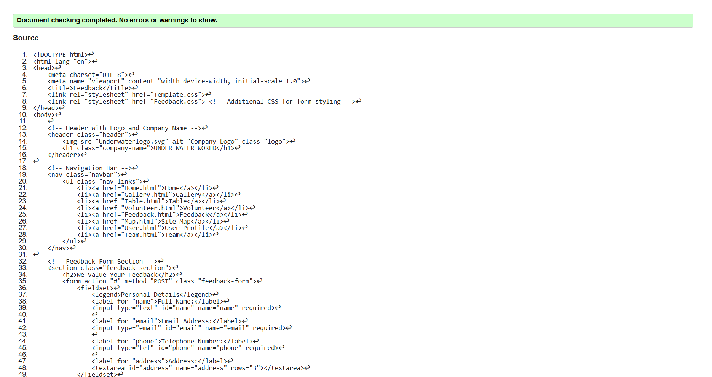
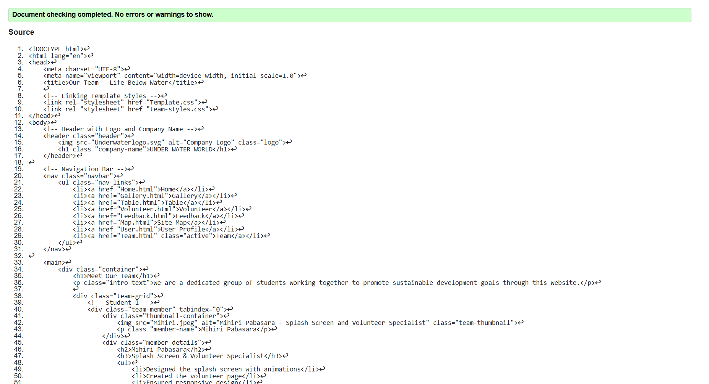
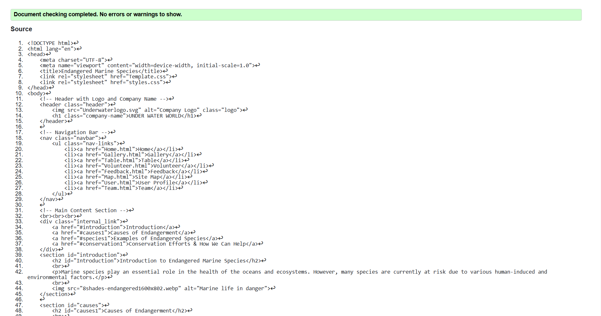

Feedback page validation report
The validation report confirmed that the Feedback page and other implemented pages meet web standards. Minor issues like missing alt attributes and unclosed tags were fixed, improving accessibility and compatibility. This process reinforced the importance of clean, semantic code and continuous validation for quality web development.

Back to Page Editor page
Include a link back to the corresponding section of the Page Editor.
Team Page validation report
The validation report for the Team page showed that the HTML and CSS followed web standards. Small issues like missing alt text and minor errors were fixed to improve accessibility. This process helped ensure the page is well-structured and easy to use.

Back to Page Editor page
Include a link back to the corresponding section of the Page Editor.
Content Page validation report
The validation report for the Content page showed that the code meets web standards, with only a few minor issues that were quickly fixed. Ensuring proper structure and accessibility made the page more user-friendly. This process highlighted the importance of regular validation to maintain quality and functionality.

Back to Page Editor page
Include a link back to the corresponding section of the Page Editor.